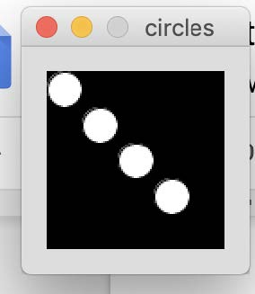

Exercise 1: What does the following code do?
How can I increase the number of lines?
How can I decrease the number of lines?
How can I change the program so the lines go all the way from top to bottom?
Exercise 2: What does the following code do?
How could you change the code so the squares are centred?
Exercise 3: What does this code do?
How could we change the code so there are more red rings?
How could we change the code so the red rings are further apart?
Exercise 4: Change the code so:
The picture should appear as the following:

Exercise 5: What does this code do?
How can I change the code so the houses are further apart?
How can I change the code so the houses are closer together?
Exercise 6: What does this code do?
How can I change the code so the circles are shades of red?
How can I change the code so the circles are stacked in the opposite direction (i.e. largest at the
bottom, smallest at the top)?
Exercise 7: Write a program that draws alternating blue and yellow rows using for-loops. Given the following pre-defined variables:
Additionally, your program must have:
Exercise 8: How can you change the following code so it is not in an infinite loop?